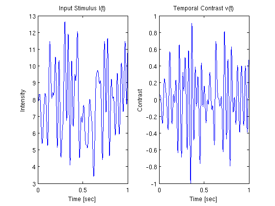
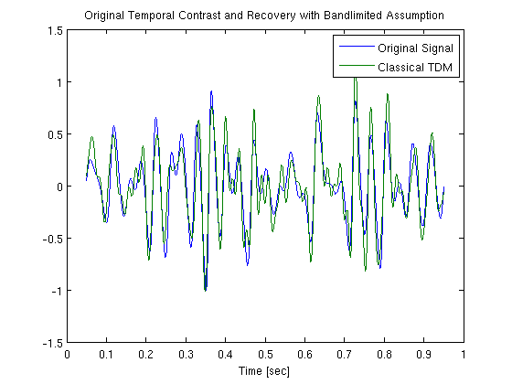
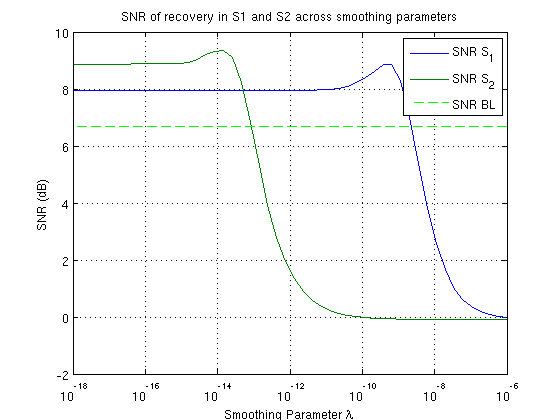

Time Encoding of Temporal Contrast using LIF neuron with Random Threshold, and Time Decoding using Smoothing Splines in Sobolev Space S1 and S2
Performs the example presented in section 3.3.1 in [1]. The temporal contrast of input photocurrent that is represented by a positive bandlimited signal is encoded with a single LIF neuron with random threshold. The signal is then reconstructed within the Sobolev spaces S1 and S2 for various values of the smoothing parameter lamda. Results are compared with the standard recovery algorithm that uses bandlimited assumptions
[1] Aurel A. Lazar and Eftychios A. Pnevmatikakis, Reconstruction of Sensory Stimuli Encoded with Integrate-and-Fire Neurons with Random Thresholds, EURASIP Journal on Advances in Signal Processing, Volume 2009, 2009, Special Issue on Statistical Signal Processing in Neuroscience, doi:10.1155/2009/682930
Contents
Generate a Test Signal
Generate a signal 1 second long sampled at 0.25 MHz with a bandwidth of 30 Hz, and compute the temporal contrast from the signal
dt = 4e-6; fmax = 30; t = dt:dt:1; tr_vc = round(0.05*length(t)):round(0.95*length(t)); % truncated vector b_p = 8; mc = floor(floor(1/dt)*fmax*dt); % maximum sinusoidal components u = b_p + gen_test_signal(t(end)+2*round(0.1*length(t))*dt,dt,fmax,-Inf,mc); % a constant bias is added to the signal to ensure that it is positive u = u((round(0.1*length(t))+1):end-round(0.1*length(t))); % truncate first 100 values to eliminate discontinuities v = (diff(u)/dt)./u(2:end); % temporal contrast v = v/max(abs(v)); % normalize figure;subplot(1,2,1);plot([0,t],u) xlabel('Time [sec]'); ylabel('Intensity'); title('Input Stimulus I(t)') subplot(1,2,2);plot(t,v) xlabel('Time [sec]'); ylabel('Contrast'); title('Temporal Contrast v(t)')
Time Encoding
Set neuron parameters
b = 2.5;
delta = 2.5;
C = 0.01;
R = 40;
tnr = 25; % threshold to noise ratio
n = delta/tnr;
snr_in = 10*log10(tnr);
Encode the temporal contrast with LIF neuron with random threshold
tk = iaf_encode(v, dt, b, delta, n, R, C);
Recover with Bandlimited Assumptions
Decode under bandlimited assumption
v_rec_bl = iaf_decode(tk,1,dt,2*2*pi*fmax,b,delta,R,C); figure;plot(t(tr_vc),v(tr_vc),t(tr_vc),v_rec_bl(tr_vc),'Linewidth',1) xlabel('Time [sec]'); legend('Original Signal','Classical TDM'); title('Original Temporal Contrast and Recovery with Bandlimited Assumption') snr_bl = 10*log10(sum(v(tr_vc).^2)/sum((v(tr_vc)-v_rec_bl(tr_vc)).^2));
Decode with RKHS and Smoothing Splines
Decode in Sobolev Space S1 and S2, using a series of smoothing parameters
lamda = logspace(-18,-6,50); v_s1 = LIF_decode_S1(tk, t(end), dt, b, delta, R, C, lamda); % recover in S1 v_s2 = LIF_decode_S2(tk, t(end), dt, b, delta, R, C, lamda); % recover in S2
compute the SNR and compare to the SNR of recovery using bandlimited assumption
for i = 1:length(lamda) snr_s1(i) = 10*log10(sum(v(tr_vc).^2)/sum((v(tr_vc)-v_s1(i,tr_vc)).^2)); snr_s2(i) = 10*log10(sum(v(tr_vc).^2)/sum((v(tr_vc)-v_s2(i,tr_vc)).^2)); end figure;semilogx(lamda,snr_s1,lamda,snr_s2); grid on; hold all; semilogx(lamda,snr_bl*ones(1,length(lamda)),'g--'); legend('SNR S_{1}','SNR S_{2}','SNR BL'); xlabel('Smoothing Parameter \lambda'); ylabel('SNR (dB)') title('SNR of recovery in S1 and S2 across smoothing parameters')
Author: Eftychios A. Pnevmatikakis
Copyright 2009-2012 Eftychios A. Pnevmatikakis